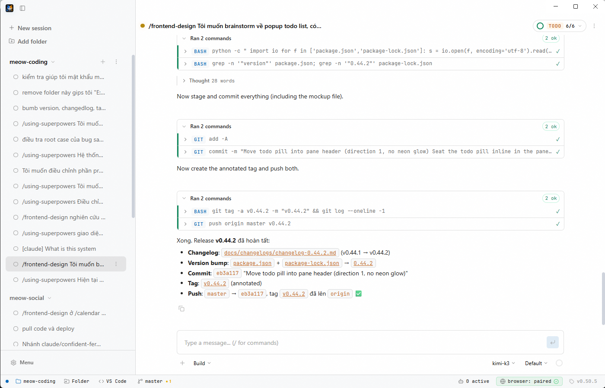
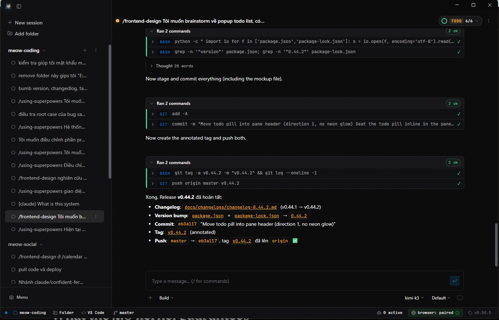

meow-coding — run many coding sessions in one window
meow-coding [--project DIR] [--session NAME] [--theme dark|light] meow-coding --new-session [--agent meow] [--model MODEL] meow-coding --list-sessions # every session, running or idle
Most coding agents live in a terminal, one conversation per window. Meow Coding makes the session the unit of work instead: each one gets a pane, stays mounted, and keeps its own transcript, tool calls, permissions and cost. Nothing is a black box, because the agent is first-party and runs in the app.


A session is a chat with the Meow agent. It reads and writes files, runs commands, searches
the web, drives a browser, and asks before doing anything you have not allowed. Every turn
snapshots the files it touched, so undo restores the files and trims the transcript
together.
Twenty-two tools ship with the agent. Each call appears in the transcript as a card you can open, so you can see exactly what ran and what it returned.
| Tool | Kind | Does |
|---|---|---|
| bash | shell | Run a command; long jobs can go to the background and be read later |
| read · write · edit | files | Read a file, create one, or apply a targeted edit |
| apply-patch | files | Apply a unified diff across several files in one call |
| glob · grep | search | Find files by pattern, search their contents |
| git | vcs | Status, diff, log and commit without leaving the chat |
| todowrite | plan | Keep a task list visible in the pane header |
| question | plan | Ask you to choose before committing to a direction |
| task | agents | Spawn an isolated subagent with its own context and narrowed permissions |
| delegate_session | agents | Hand a task to another session in the same project |
| skill | agents | Load a bundled or custom skill into the current turn |
| webfetch · websearch | web | Read a page, or search for one |
| browser | web | Drive a real Chrome profile: navigate, click, type, read |
| lsp | code | Ask a language server for definitions, references and symbols |
| office | docs | Create and edit .docx, .xlsx and .pptx files |
| revert | safety | Undo the files this session changed |
MCP servers add their own tools to the same list, over stdio or HTTP. A custom tool is a
JavaScript module dropped into userData/tools.
Type / in the composer to run a command. Twenty ship with the app; the fifteen
Superpowers workflows cover the long jobs — brainstorming, planning, executing, reviewing.
Write your own in Markdown. $1..$N takes arguments, @path inlines a file,
!cmd inlines a command's output. Subagent roles live in
.meow/agents/*.md and can only narrow what your permission rules already allow.
Nine tabs, and no config file you have to hand-edit. Hooks run your own policy outside the
context window — PreToolUse, PostToolUse, Stop.